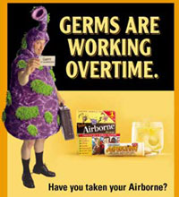

Placebos gone wild!

Airborne Health Formula intruded abruptly into my consciousness recently, plastering every available ad spot in Union Square subway station with their cutesy, fear-mongering, exposed-leg advertising campaign.
The headline: germs are everywhere. Good, start with something everyone knows is true. (Some people know it a little too much, but stoking the flames of OCD has been a health marketing standby for over half a century now.)
Airborne’s banal observation that “people get sick” is followed by an equally simple command: take Airborne. Deftly, the company skips over the thorny ground of effectiveness claims — they just order you to take it.
And, as never fails to surprise and frighten me, people obey.
This polished, high-dollar advertising campaign apparently didn’t leave much room for investment in a Web site, as Airborne’s is surprisingly ugly, riddled with exclamation points in triplicate and JPEGs as dirty as the germs they’re invoking.
You can see their target customer tumble a few income brackets with this unbelievably cheezy quote on the front page:
“Look, Airborne is great. I wouldn’t go on a movie set without it; it’s on my plane and in my house.”—Kevin Costner, Hollywood, CA
“movie set” ? “Hollywood, CA” ? “Kevin Costner” ? Guys, you’re making my jokes for me. Cool it.
Also interesting on their site is the “we’re famous” page (yes, that’s what it’s called), which starts with celebrity endorsements and press coverage of the product, but as you scroll down the magazine names tellingly morph from Mom’s Health Matters to Entrepreneur and Advertising Age.
In fact, that’s the only story there is to tell about Airborne: brilliant marketing. Heath-wise, it’s as boring as brushing your teeth. See for yourself. Airborne is a wildly overpriced concoction of vitamins and Echinacea-like sustances, that may or may not do anything.
As it happens, I have a shelf overflowing with that crap. My mom gives it to me every Christmas. When I’m feeling ill, as I am right now, I make my own “unique formulation” by popping whichever pills are at hand.
I may not have the killer “elementary school teacher” resume of Victoria Knight-McDowell, but, ohmygod people, I’m feeling better ALREADY!!!
Backtalk
thank you for addressing this issue! i can’t stand this influx of grown men wearing silly costumes as a ‘funny’ ad campaign. it’s old.
Yeah, uninspired, and apparently selling anyway. Guess Airborne is a bummer for smart people in advertising too!
I’m still waiting on a cough-stifling mob of devotees led by Oprah and Kevin Costner march up University and burn down my building. So far, all I’ve gotten was a creepy, unsolicited Airborne testimonial at work yesterday. Think they’re on to me? Gotta run!
Add a comment